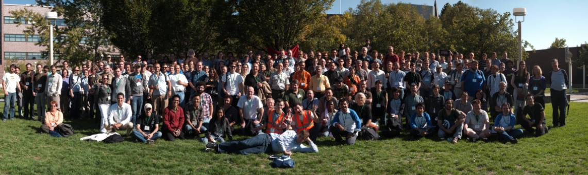

Motivations
- Présenter OpenStreetMap : la liberté logicielle dans le monde de la cartographie et la géolocalisation.
- OSM Tunisie : pour avoir une communauté plus solide, rassembler des personnes de de différents backgrounds est une nécessité.
OpenStreetMap est un environnement de cartographie.
Pourquoi utiliser OSM ?
Il résout le besoin humain de savoir le “où”.
- C'est gratuit :)
- C'est Libre : l’approche avec laquelle les données sont collecté et distribué (sous license ODbl).
- Semblable au modèle Wikipedia.
- OSM n'utilise pas nos données privées pour cibler des publicités où altérer nos résultats de recherches ;)
L’île de Haîti - 2010
Pourquoi compter sur une entreprise américaine et mondiale pour nous dire quels sont les noms des rues de notre propre quartier ?
OSM Tunisia >= 24 juin 2009
"Naissance" de la communauté (création de la mailing liste)
- À l'époque, la carte Tunisienne était très sommaire :
- La capitale Tunis, était représentée par un POI.
- Quelques routes principales.
- Les autoroutes et les routes nationales n'y étaient pas...
- La page Wiki a été crée le 25 août 2009 : http://wiki.openstreetmap.org/wiki/FR:WikiProject_Tunisie
OSM TN @StateOfTheMap 2011
- La communauté OSM Tunisienne a été mise à l'honneur lors de la conférence State Of The Map 2011 Denver, Colorado, USA.
- M. Chedli Ghedira était invité pour présenter l’état de la carte Tunisienne durant les SOTM 2011 Scholarship Talks.

12éme Anniversaire OSM
13 Août 2016
Carto'party #1 @CFC
10 Septembre 2016
Carto'party #2 @WhateverSaloon
9 Octobre 2016
Carto'party #3 @FST
19 Novembre 2016
OpenStreetMap est réalisé par des gens
comme vous !
Rejoindre la communauté
Rendez-vous à notre prochain atelier mensuel là où :
- On n'est pas des spectateurs mais des participants.
- On n'est pas des consommateurs mais des contributeurs.
- On n'a pas de professeurs mais des médiateurs.
Merci
Des questions/remarques ?
Slides: CC-BY-SA